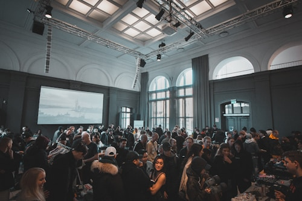

Ana cruza el salon entero. La musica sigue, la gente rie, pero ella solo ve a Wes. El la nota cuando ya esta a dos pasos. La expresion de su cara es la de alguien que intenta no esperar nada.
"Wes."
"Ana. Pensé que venias con Kevin."
"Vine. Pero me di cuenta de algo importante."
Hay un silencio. Ana respira.
"Toda mi vida crei que lo que sentia por Kevin era amor. Pero lo que sentia por el era una idea. Una pelicula que me invente a los doce anos." Pausa. "Lo que siento por ti no es una idea, Wes. Y eso me aterra. Porque eres mi vecino insoportable y llevamos anos peleando por un estacionamiento ridiculo y..."
Wes se rie. Una risa suave, sorprendida. Y entonces dice: "Ana. Ya callate." Y la toma de la mano.
Bailan el resto de la noche. Kevin los ve desde lejos, levanta su vaso como brindando y sigue con su grupo. Nadie sale lastimado mas de lo necesario.
Camino a casa, Ana mira el lugar de estacionamiento frente a su edificio. "Supongo que puedes seguir usandolo", dice. "El trato ya no aplica."
"Por fin", dice Wes. "Llevaba anos esperando ganar esa pelea."
A veces el amor llega disfrazado de enemigo. A veces vive a tres metros de tu puerta y te roba el estacionamiento. Y a veces, si tienes suerte, se queda para siempre.
Este es el FINAL BUENO. La historia que el corazon de Ana siempre merecia.